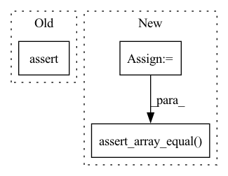

Pattern ID :20014
Before Change
optimization_direction = np.dot(updater.normal_dist.T, scaled_rewards)
updater(learning_rate=0.01, optimization_direction=optimization_direction)
new_population = updater.population
assert new_population.shape == (POPULATION_SIZE, 2)
np.testing.assert_allclose(np.std(new_population, axis=0), np.ones(2), rtol=0.1)
np.testing.assert_array_less(updater.mean, np.array([10, 10]))
After Change
)
// ASSERT POPULATION STATS
updater = NoisyGradientAscent(model_continuous)
// make sure starting population mean is correct
np.testing.assert_allclose(
np.mean(model_continuous.numpy_actors(), axis=0), np.array([10, 10]), rtol=0.1
)
// TEST CALL
old_model = copy.deepcopy(model_continuous)
old_population = model_continuous.numpy_actors()
action = model_continuous(np.zeros(POPULATION_SIZE))
_, rewards, _, _ = env_continuous.step(action)
scaled_rewards = (rewards - np.mean(rewards)) / np.std(rewards)
optimization_direction = np.dot(updater.normal_dist.T, scaled_rewards)
log = updater(learning_rate=0.01, optimization_direction=optimization_direction)
new_population = model_continuous.numpy_actors()
assert log.divergence > 0
// make sure the nerual network has been updated by the updater
assert model_continuous != old_model
assert np.not_equal(old_population, new_population).any()
// make sure the network mean has been updated by the updater
np.testing.assert_array_equal( model_continuous.mean_actor, updater.mean)
// make sure the new popualtion has the correct std
np.testing.assert_allclose(
np.std(model_continuous.numpy_actors(), axis=0), np.ones(2), rtol=0.1
)In pattern: SUPERPATTERN
Frequency: 6
Non-data size: 3
Instances Fragment ID: 65195702
Project Name: londonnode/pearl
Commit Name: ef20e6cb8e342b9b554f97de99d194649a385553
Time: 2022-01-06
Author: rohan.tangri@gmail.com
File Name: tests/test_updaters.py
M Class Name: AnonimousClass
N Class Name: AnonimousClass
M Method Name: test_evolutionary_updater_continuous(0)
N Method Name: test_evolutionary_updater_continuous(0)
M Parent Class:
N Parent Class:
M File Name: tests/test_updaters.py
N File Name: tests/test_updaters.py
M Start Line: 377
M End Line: 395
N Start Line: 376
N End Line: 414
Before Change
Check the lower bounds are correctly set
model.bounds = {"x": [-1, 1], "y": [-1, 1]}
model._lower = None
assert (Model.lower_bounds.__get__(model) == [-1, -1]).all()
def test_upper_bounds(model):After Change
model._set_upper_lower = MagicMock(side_effect=func)
model._lower = None
bounds = Model.lower_bounds.__get__(model)
model._set_upper_lower.assert_called_once()
np.testing.assert_array_equal( bounds, np.array([-1, -1]))
def test_upper_bounds(model):
Check the upper bounds are correctly set Fragment ID: 65195701
Project Name: mj-will/nessai
Commit Name: 6deebb0a5c5fe77ee3c35152a6623594feeb69bb
Time: 2022-07-07
Author: m.williams.4@research.gla.ac.uk
File Name: tests/test_model.py
M Class Name: AnonimousClass
N Class Name: AnonimousClass
M Method Name: test_lower_bounds(1)
N Method Name: test_lower_bounds(1)
M Parent Class:
N Parent Class:
M File Name: tests/test_model.py
N File Name: tests/test_model.py
M Start Line: 151
M End Line: 153
N Start Line: 162
N End Line: 166
Before Change
trace = pymc3.sample(10, step=step, tune=5, progressbar=False, chains=1)
assert not step.tune
assert np.all(trace["step_size"][5:] == trace["step_size"][5])
After Change
)
assert not step.tune
ss_tuned = idata.warmup_sample_stats["step_size"][0, -1]
ss_posterior = idata.sample_stats["step_size"][0, :]
np.testing.assert_array_equal( ss_posterior, ss_tuned)
Fragment ID: 65195706
Project Name: pymc-devs/pymc3
Commit Name: 0923d255a45773b7a92bbe36cb11ad5d946a3122
Time: 2021-06-07
Author: michael.osthege@outlook.com
File Name: pymc3/tests/test_hmc.py
M Class Name: AnonimousClass
N Class Name: AnonimousClass
M Method Name: test_nuts_tuning(0)
N Method Name: test_nuts_tuning(0)
M Parent Class:
N Parent Class:
M File Name: pymc3/tests/test_hmc.py
N File Name: pymc3/tests/test_hmc.py
M Start Line: 59
M End Line: 66
N Start Line: 59
N End Line: 69
Before Change
updater(learning_rate=1e-5, optimization_direction=optimization_direction)
new_population = updater.population
assert np.issubdtype(new_population.dtype, np.integer)
assert new_population.shape == (POPULATION_SIZE, 1)
np.testing.assert_allclose(np.std(new_population, axis=0), np.ones(1), rtol=0.1)
np.testing.assert_array_less(updater.mean, np.array([5]))
After Change
)
// ASSERT POPULATION STATS
updater = NoisyGradientAscent(model_discrete)
// make sure the population has been discretized
assert np.issubdtype(model_discrete.numpy_actors().dtype, np.integer)
// make sure starting population mean is correct
np.testing.assert_allclose(
np.mean(model_discrete.numpy_actors(), axis=0), np.array([5]), rtol=0.1
)
// Test call
old_model = copy.deepcopy(model_discrete)
old_population = model_discrete.numpy_actors()
action = model_discrete(np.zeros(POPULATION_SIZE))
_, rewards, _, _ = env_discrete.step(action)
scaled_rewards = (rewards - np.mean(rewards)) / np.std(rewards)
optimization_direction = np.dot(updater.normal_dist.T, scaled_rewards)
log = updater(learning_rate=1e-5, optimization_direction=optimization_direction)
new_population = model_discrete.numpy_actors()
assert log.divergence > 0
// make sure the nerual network has been updated by the updater
assert model_discrete != old_model
assert np.not_equal(old_population, new_population).any()
// make sure the population has been discretized
assert np.issubdtype(new_population.dtype, np.integer)
// make sure the network mean has been updated by the updater
np.testing.assert_array_equal( model_discrete.mean_actor, updater.mean)
// make sure the new popualtion has the correct std
np.testing.assert_allclose(np.std(new_population, axis=0), np.ones(1), rtol=0.1)
// make sure the update direction is correct
np.testing.assert_array_less(model_discrete.mean_actor, np.array([5])) Fragment ID: 65195707
Project Name: londonnode/pearl
Commit Name: ef20e6cb8e342b9b554f97de99d194649a385553
Time: 2022-01-06
Author: rohan.tangri@gmail.com
File Name: tests/test_updaters.py
M Class Name: AnonimousClass
N Class Name: AnonimousClass
M Method Name: test_evolutionary_updater_discrete(0)
N Method Name: test_evolutionary_updater_discrete(0)
M Parent Class:
N Parent Class:
M File Name: tests/test_updaters.py
N File Name: tests/test_updaters.py
M Start Line: 399
M End Line: 419
N Start Line: 419
N End Line: 458
Before Change
else:
proposal.compute_acceptance.assert_not_called()
proposal.evaluate_likelihoods.assert_not_called()
assert np.all(proposal.samples["logL"] == 0.0)
def test_populate_not_initialised(proposal):After Change
numpy_array_to_live_points(np.random.randn(drawsize, n_dims), names),
numpy_array_to_live_points(np.random.randn(drawsize, n_dims), names),
]
log_l = np.random.rand(poolsize)
proposal.initialised = True
proposal.max_radius = 50
proposal.dims = n_dims
proposal.poolsize = poolsize
proposal.drawsize = drawsize
proposal.min_radius = 0.1
proposal.fuzz = 1.0
proposal.indices = []
proposal.approx_acceptance = [0.4]
proposal.acceptance = [0.7]
proposal.keep_samples = False
proposal.fixed_radius = False
proposal.compute_radius_with_all = False
proposal.check_acceptance = check_acceptance
proposal._plot_pool = True
proposal.populated_count = 1
proposal.population_dtype = \
[("x_prime", "f8"), ("y_prime", "f8"), ("logP", "f8"), ("logL", "f8")]
proposal.draw_latent_kwargs = {"var": 2.0}
proposal.forward_pass = MagicMock(return_value=(worst_z, worst_q))
proposal.radius = MagicMock(return_value=(1.0, worst_q))
proposal.get_alt_distribution = MagicMock(return_value=None)
proposal.draw_latent_prior = MagicMock(side_effect=z)
proposal.rejection_sampling = MagicMock(
side_effect=[(a[:-1], b[:-1]) for a, b in zip(z, x)]
)
proposal.compute_acceptance = MagicMock(side_effect=[0.5, 0.8])
proposal.model = MagicMock()
proposal.model.batch_evaluate_log_likelihood = \
MagicMock(return_value=log_l)
proposal.plot_pool = MagicMock()
proposal.convert_to_samples = MagicMock(
side_effect=lambda *args, **kwargs: args[0]
)
FlowProposal.populate(proposal, worst_point, N=10, plot=True)
proposal.forward_pass.assert_called_once_with(
worst_point, rescale=True, compute_radius=True,
)
proposal.radius.assert_called_once_with(worst_z, worst_q)
assert proposal.r == 1
draw_calls = [
call(2, r=1.0, N=5, fuzz=1.0, var=2.0),
call(2, r=1.0, N=5, fuzz=1.0, var=2.0),
]
proposal.draw_latent_prior.assert_has_calls(draw_calls)
rejection_calls = [
call(z[0], worst_q), call(z[1], worst_q), call(z[2], worst_q)
]
proposal.rejection_sampling.assert_has_calls(rejection_calls)
proposal.plot_pool.assert_called_once()
proposal.convert_to_samples.assert_called_once()
np.testing.assert_array_equal(
proposal.convert_to_samples.call_args[0][0],
proposal.x
)
assert proposal.convert_to_samples.call_args[1]["plot"] is True
assert proposal.population_acceptance == (10 / 15)
assert proposal.populated_count == 2
assert proposal.populated is True
assert proposal.x.size == 10
if check_acceptance:
proposal.compute_acceptance.assert_called()
assert proposal.approx_acceptance == [0.4, 0.5]
assert proposal.acceptance == [0.7, 0.8]
else:
proposal.compute_acceptance.assert_not_called()
proposal.model.batch_evaluate_log_likelihood.assert_called_once_with(
proposal.samples
)
np.testing.assert_array_equal( proposal.samples["logL"], log_l)
def test_populate_not_initialised(proposal):
Assert populate fails if the proposal is not initialised Fragment ID: 65195704
Project Name: mj-will/nessai
Commit Name: df638bbd58c045937979cbe3ccae1b7988a8dd77
Time: 2022-02-16
Author: michaeljw1@googlemail.com
File Name: tests/test_proposal/test_flowproposal/test_flowproposal_population.py
M Class Name: AnonimousClass
N Class Name: AnonimousClass
M Method Name: test_populate(2)
N Method Name: test_populate(2)
M Parent Class:
N Parent Class:
M File Name: tests/test_proposal/test_flowproposal/test_flowproposal_population.py
N File Name: tests/test_proposal/test_flowproposal/test_flowproposal_population.py
M Start Line: 339
M End Line: 386
N Start Line: 292
N End Line: 391
Before Change
Check the upper bounds are correctly set
model.bounds = {"x": [-1, 1], "y": [-1, 1]}
model._upper = None
assert (Model.upper_bounds.__get__(model) == [1, 1]).all()
def test_vectorised_likelihood_true(model):After Change
model._set_upper_lower = MagicMock(side_effect=func)
model._upper = None
bounds = Model.upper_bounds.__get__(model)
model._set_upper_lower.assert_called_once()
np.testing.assert_array_equal( bounds, np.array([1, 1]))
def test_vectorised_likelihood_true(model):
Fragment ID: 65195709
Project Name: mj-will/nessai
Commit Name: 6deebb0a5c5fe77ee3c35152a6623594feeb69bb
Time: 2022-07-07
Author: m.williams.4@research.gla.ac.uk
File Name: tests/test_model.py
M Class Name: AnonimousClass
N Class Name: AnonimousClass
M Method Name: test_upper_bounds(1)
N Method Name: test_upper_bounds(1)
M Parent Class:
N Parent Class:
M File Name: tests/test_model.py
N File Name: tests/test_model.py
M Start Line: 158
M End Line: 160
N Start Line: 174
N End Line: 178